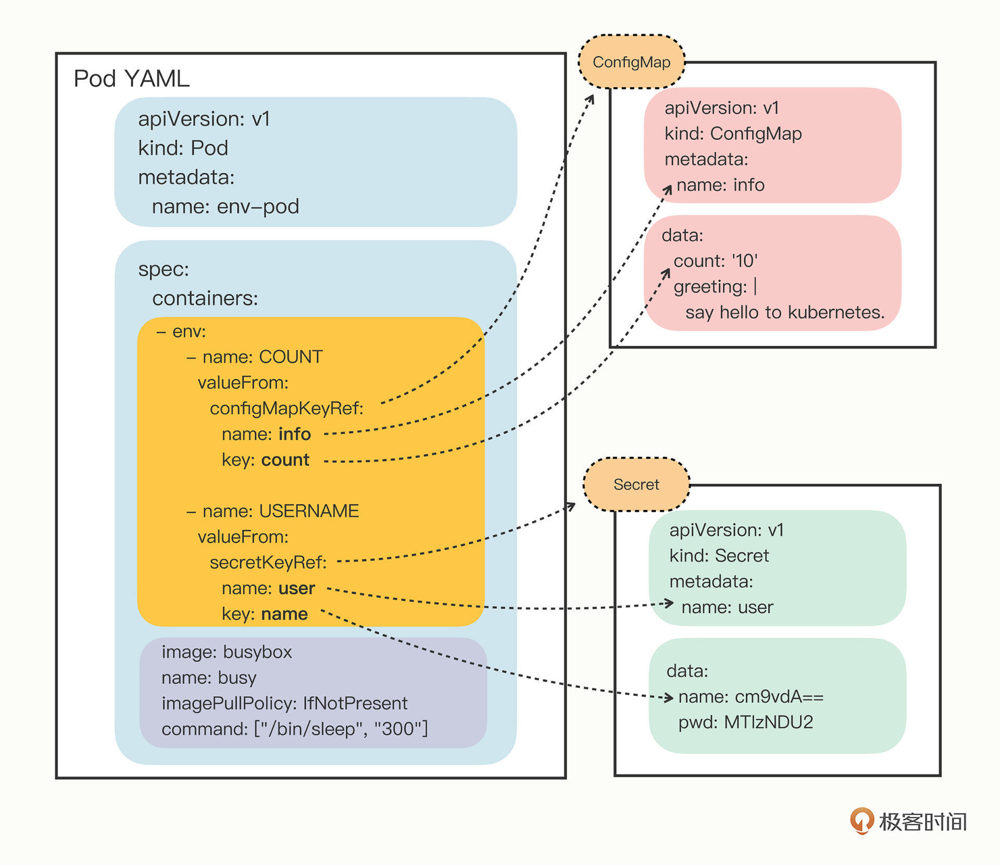

- 00 开篇词 迎难而上，做云原生时代的弄潮儿.md.html
- 00 课前准备 动手实践才是最好的学习方式.md.html
- 01 初识容器：万事开头难.md.html
- 02 被隔离的进程：一起来看看容器的本质.md.html
- 03 容器化的应用：会了这些你就是Docker高手.md.html
- 04 创建容器镜像：如何编写正确、高效的Dockerfile.md.html
- 05 镜像仓库：该怎样用好Docker Hub这个宝藏.md.html
- 06 打破次元壁：容器该如何与外界互联互通.md.html
- 07 实战演练：玩转Docker.md.html
- 08 视频：入门篇实操总结.md.html
- 09 走近云原生：如何在本机搭建小巧完备的Kubernetes环境.md.html
- 10 自动化的运维管理：探究Kubernetes工作机制的奥秘.md.html
- 11 YAML：Kubernetes世界里的通用语.md.html
- 12 Pod：如何理解这个Kubernetes里最核心的概念？.md.html
- 13 Job_CronJob：为什么不直接用Pod来处理业务？.md.html
- 14 ConfigMap_Secret：怎样配置、定制我的应用.md.html
- 15 实战演练：玩转Kubernetes（1）.md.html
- 16 视频：初级篇实操总结.md.html
- 17 更真实的云原生：实际搭建多节点的Kubernetes集群.md.html
- 18 Deployment：让应用永不宕机.md.html
- 19 Daemonset：忠实可靠的看门狗.md.html
- 20 Service：微服务架构的应对之道.md.html
- 21 Ingress：集群进出流量的总管.md.html
- 22 实战演练：玩转Kubernetes（2）.md.html
- 23 视频：中级篇实操总结.md.html
- 24 PersistentVolume：怎么解决数据持久化的难题？.md.html
- 25 PersistentVolume + NFS：怎么使用网络共享存储？.md.html
- 26 StatefulSet：怎么管理有状态的应用？.md.html
- 27 滚动更新：如何做到平滑的应用升级降级？.md.html
- 28 应用保障：如何让Pod运行得更健康？.md.html
- 29 集群管理：如何用名字空间分隔系统资源？.md.html
- 30 系统监控：如何使用Metrics Server和Prometheus？.md.html
- 31 网络通信：CNI是怎么回事？又是怎么工作的？.md.html
- 32 实战演练：玩转Kubernetes（3）.md.html
- 33 视频：高级篇实操总结.md.html
- 加餐 docker-compose：单机环境下的容器编排工具.md.html
- 加餐 谈谈Kong Ingress Controller.md.html
- 结束语 是终点，更是起点.md.html
- 捐赠
14 ConfigMap_Secret：怎样配置、定制我的应用
你好，我是Chrono。
前两节课里我们学习了Kubernetes里的三种API对象：Pod、Job和CronJob，虽然还没有讲到更高级的其他对象，但使用它们也可以在集群里编排运行一些实际的业务了。
不过想让业务更顺利地运行，有一个问题不容忽视，那就是应用的配置管理。
配置文件，你应该有所了解吧，通常来说应用程序都会有一个，它把运行时需要的一些参数从代码中分离出来，让我们在实际运行的时候能更方便地调整优化，比如说Nginx有nginx.conf、Redis有redis.conf、MySQL有my.cnf等等。
我们在“入门篇”里学习容器技术的时候讲过，可以选择两种管理配置文件的方式。第一种是编写Dockerfile，用 COPY 指令把配置文件打包到镜像里；第二种是在运行时使用 docker cp 或者 docker run -v，把本机的文件拷贝进容器。
但这两种方式都存在缺陷。第一种方法相当于是在镜像里固定了配置文件，不好修改，不灵活，第二种方法则显得有点“笨拙”，不适合在集群中自动化运维管理。
对于这个问题Kubernetes有它自己的解决方案，你也应该能够猜得到，当然还是使用YAML语言来定义API对象，再组合起来实现动态配置。
今天我就来讲解Kubernetes里专门用来管理配置信息的两种对象：ConfigMap和Secret，使用它们来灵活地配置、定制我们的应用。
ConfigMap/Secret
首先你要知道，应用程序有很多类别的配置信息，但从数据安全的角度来看可以分成两类：
- 一类是明文配置，也就是不保密，可以任意查询修改，比如服务端口、运行参数、文件路径等等。
- 另一类则是机密配置，由于涉及敏感信息需要保密，不能随便查看，比如密码、密钥、证书等等。
这两类配置信息本质上都是字符串，只是由于安全性的原因，在存放和使用方面有些差异，所以Kubernetes也就定义了两个API对象，ConfigMap用来保存明文配置，Secret用来保存秘密配置。
什么是ConfigMap
先来看ConfigMap，我们仍然可以用命令 kubectl create 来创建一个它的YAML样板。注意，它有简写名字“cm”，所以命令行里没必要写出它的全称：
export out="--dry-run=client -o yaml" # 定义Shell变量
kubectl create cm info $out
得到的样板文件大概是这个样子：
apiVersion: v1
kind: ConfigMap
metadata:
name: info
你可能会有点惊讶，ConfigMap的YAML和之前我们学过的Pod、Job不一样，除了熟悉的“apiVersion”“kind”“metadata”，居然就没有其他的了，最重要的字段“spec”哪里去了？这是因为ConfigMap存储的是配置数据，是静态的字符串，并不是容器，所以它们就不需要用“spec”字段来说明运行时的“规格”。
既然ConfigMap要存储数据，我们就需要用另一个含义更明确的字段“data”。
要生成带有“data”字段的YAML样板，你需要在 kubectl create 后面多加一个参数 --from-literal ，表示从字面值生成一些数据：
kubectl create cm info --from-literal=k=v $out
注意，因为在ConfigMap里的数据都是Key-Value结构，所以 --from-literal 参数需要使用 k=v 的形式。
把YAML样板文件修改一下，再多增添一些Key-Value，就得到了一个比较完整的ConfigMap对象：
apiVersion: v1
kind: ConfigMap
metadata:
name: info
data:
count: '10'
debug: 'on'
path: '/etc/systemd'
greeting: |
say hello to kubernetes.
现在就可以使用 kubectl apply 把这个YAML交给Kubernetes，让它创建ConfigMap对象了：
kubectl apply -f cm.yml
创建成功后，我们还是可以用 kubectl get、kubectl describe 来查看ConfigMap的状态：
kubectl get cm
kubectl describe cm info

你可以看到，现在ConfigMap的Key-Value信息就已经存入了etcd数据库，后续就可以被其他API对象使用。
什么是Secret
了解了ConfigMap对象，我们再来看Secret对象就会容易很多，它和ConfigMap的结构和用法很类似，不过在Kubernetes里Secret对象又细分出很多类，比如：
- 访问私有镜像仓库的认证信息
- 身份识别的凭证信息
- HTTPS通信的证书和私钥
- 一般的机密信息（格式由用户自行解释）
前几种我们现在暂时用不到，所以就只使用最后一种，创建YAML样板的命令是 kubectl create secret generic ，同样，也要使用参数 --from-literal 给出Key-Value值：
kubectl create secret generic user --from-literal=name=root $out
得到的Secret对象大概是这个样子：
apiVersion: v1
kind: Secret
metadata:
name: user
data:
name: cm9vdA==
Secret对象第一眼的感觉和ConfigMap非常相似，只是“kind”字段由“ConfigMap”变成了“Secret”，后面同样也是“data”字段，里面也是Key-Value的数据。
不过，既然它的名字是Secret，我们就不能像ConfigMap那样直接保存明文了，需要对数据“做点手脚”。你会发现，这里的“name”值是一串“乱码”，而不是刚才在命令行里写的明文“root”。
这串“乱码”就是Secret与ConfigMap的不同之处，不让用户直接看到原始数据，起到一定的保密作用。不过它的手法非常简单，只是做了Base64编码，根本算不上真正的加密，所以我们完全可以绕开kubectl，自己用Linux小工具“base64”来对数据编码，然后写入YAML文件，比如：
echo -n "123456" | base64
MTIzNDU2
要注意这条命令里的 echo ，必须要加参数 -n 去掉字符串里隐含的换行符，否则Base64编码出来的字符串就是错误的。
我们再来重新编辑Secret的YAML，为它添加两个新的数据，方式可以是参数 --from-literal 自动编码，也可以是自己手动编码：
apiVersion: v1
kind: Secret
metadata:
name: user
data:
name: cm9vdA== # root
pwd: MTIzNDU2 # 123456
db: bXlzcWw= # mysql
接下来的创建和查看对象操作和ConfigMap是一样的，使用 kubectl apply、kubectl get、kubectl describe：
kubectl apply -f secret.yml
kubectl get secret
kubectl describe secret user

这样一个存储敏感信息的Secret对象也就创建好了，而且因为它是保密的，使用 kubectl describe 不能直接看到内容，只能看到数据的大小，你可以和ConfigMap对比一下。
如何使用
现在通过编写YAML文件，我们创建了ConfigMap和Secret对象，该怎么在Kubernetes里应用它们呢？
因为ConfigMap和Secret只是一些存储在etcd里的字符串，所以如果想要在运行时产生效果，就必须要以某种方式“注入”到Pod里，让应用去读取。在这方面的处理上Kubernetes和Docker是一样的，也是两种途径：环境变量和加载文件。
先看比较简单的环境变量。
如何以环境变量的方式使用ConfigMap/Secret
在前面讲Pod的时候，说过描述容器的字段“containers”里有一个“env”，它定义了Pod里容器能够看到的环境变量。
当时我们只使用了简单的“value”，把环境变量的值写“死”在了YAML里，实际上它还可以使用另一个“valueFrom”字段，从ConfigMap或者Secret对象里获取值，这样就实现了把配置信息以环境变量的形式注入进Pod，也就是配置与应用的解耦。
由于“valueFrom”字段在YAML里的嵌套层次比较深，初次使用最好看一下 kubectl explain 对它的说明：
kubectl explain pod.spec.containers.env.valueFrom
“valueFrom”字段指定了环境变量值的来源，可以是“configMapKeyRef”或者“secretKeyRef”，然后你要再进一步指定应用的ConfigMap/Secret的“name”和它里面的“key”，要当心的是这个“name”字段是API对象的名字，而不是Key-Value的名字。
下面我就把引用了ConfigMap和Secret对象的Pod列出来，给你做个示范，为了提醒你注意，我把“env”字段提到了前面：
apiVersion: v1
kind: Pod
metadata:
name: env-pod
spec:
containers:
- env:
- name: COUNT
valueFrom:
configMapKeyRef:
name: info
key: count
- name: GREETING
valueFrom:
configMapKeyRef:
name: info
key: greeting
- name: USERNAME
valueFrom:
secretKeyRef:
name: user
key: name
- name: PASSWORD
valueFrom:
secretKeyRef:
name: user
key: pwd
image: busybox
name: busy
imagePullPolicy: IfNotPresent
command: ["/bin/sleep", "300"]
这个Pod的名字是“env-pod”，镜像是“busybox”，执行命令sleep睡眠300秒，我们可以在这段时间里使用命令 kubectl exec 进入Pod观察环境变量。
你需要重点关注的是它的“env”字段，里面定义了4个环境变量，COUNT、GREETING、USERNAME、PASSWORD。
对于明文配置数据， COUNT、GREETING 引用的是ConfigMap对象，所以使用字段“configMapKeyRef”，里面的“name”是ConfigMap对象的名字，也就是之前我们创建的“info”，而“key”字段分别是“info”对象里的 count 和 greeting。
同样的对于机密配置数据， USERNAME、PASSWORD 引用的是Secret对象，要使用字段“secretKeyRef”，再用“name”指定Secret对象的名字 user，用“key”字段应用它里面的 name 和 pwd 。
这段解释确实是有点绕口令的感觉，因为ConfigMap和Secret在Pod里的组合关系不像Job/CronJob那么简单直接，所以我还是用画图来表示它们的引用关系：

从这张图你就应该能够比较清楚地看出Pod与ConfigMap、Secret的“松耦合”关系，它们不是直接嵌套包含，而是使用“KeyRef”字段间接引用对象，这样，同一段配置信息就可以在不同的对象之间共享。
弄清楚了环境变量的注入方式之后，让我们用 kubectl apply 创建Pod，再用 kubectl exec 进入Pod，验证环境变量是否生效：
kubectl apply -f env-pod.yml
kubectl exec -it env-pod -- sh
echo $COUNT
echo $GREETING
echo $USERNAME $PASSWORD

这张截图就显示了Pod的运行结果，可以看到在Pod里使用 echo 命令确实输出了我们在两个YAML里定义的配置信息，也就证明Pod对象成功组合了ConfigMap和Secret对象。
以环境变量的方式使用ConfigMap/Secret还是比较简单的，下面来看第二种加载文件的方式。
如何以Volume的方式使用ConfigMap/Secret
Kubernetes为Pod定义了一个“Volume”的概念，可以翻译成是“存储卷”。如果把Pod理解成是一个虚拟机，那么Volume就相当于是虚拟机里的磁盘。
我们可以为Pod“挂载（mount）”多个Volume，里面存放供Pod访问的数据，这种方式有点类似 docker run -v，虽然用法复杂了一些，但功能也相应强大一些。
在Pod里挂载Volume很容易，只需要在“spec”里增加一个“volumes”字段，然后再定义卷的名字和引用的ConfigMap/Secret就可以了。要注意的是Volume属于Pod，不属于容器，所以它和字段“containers”是同级的，都属于“spec”。
下面让我们来定义两个Volume，分别引用ConfigMap和Secret，名字是 cm-vol 和 sec-vol：
spec:
volumes:
- name: cm-vol
configMap:
name: info
- name: sec-vol
secret:
secretName: user
有了Volume的定义之后，就可以在容器里挂载了，这要用到“volumeMounts”字段，正如它的字面含义，可以把定义好的Volume挂载到容器里的某个路径下，所以需要在里面用“mountPath”“name”明确地指定挂载路径和Volume的名字。
containers:
- volumeMounts:
- mountPath: /tmp/cm-items
name: cm-vol
- mountPath: /tmp/sec-items
name: sec-vol
把“volumes”和“volumeMounts”字段都写好之后，配置信息就可以加载成文件了。这里我还是画了图来表示它们的引用关系：

你可以看到，挂载Volume的方式和环境变量又不太相同。环境变量是直接引用了ConfigMap/Secret，而Volume又多加了一个环节，需要先用Volume引用ConfigMap/Secret，然后在容器里挂载Volume，有点“兜圈子”“弯弯绕”。
这种方式的好处在于：以Volume的概念统一抽象了所有的存储，不仅现在支持ConfigMap/Secret，以后还能够支持临时卷、持久卷、动态卷、快照卷等许多形式的存储，扩展性非常好。
现在我把Pod的完整YAML描述列出来，然后使用 kubectl apply 创建它：
apiVersion: v1
kind: Pod
metadata:
name: vol-pod
spec:
volumes:
- name: cm-vol
configMap:
name: info
- name: sec-vol
secret:
secretName: user
containers:
- volumeMounts:
- mountPath: /tmp/cm-items
name: cm-vol
- mountPath: /tmp/sec-items
name: sec-vol
image: busybox
name: busy
imagePullPolicy: IfNotPresent
command: ["/bin/sleep", "300"]
创建之后，我们还是用 kubectl exec 进入Pod，看看配置信息被加载成了什么形式：
kubectl apply -f vol-pod.yml
kubectl get pod
kubectl exec -it vol-pod -- sh
你会看到，ConfigMap和Secret都变成了目录的形式，而它们里面的Key-Value变成了一个个的文件，而文件名就是Key。
因为这种形式上的差异，以Volume的方式来使用ConfigMap/Secret，就和环境变量不太一样。环境变量用法简单，更适合存放简短的字符串，而Volume更适合存放大数据量的配置文件，在Pod里加载成文件后让应用直接读取使用。
小结
好了，今天我们学习了两种在Kubernetes里管理配置信息的API对象ConfigMap和Secret，它们分别代表了明文信息和机密敏感信息，存储在etcd里，在需要的时候可以注入Pod供Pod使用。
简单小结一下今天的要点：
- ConfigMap记录了一些Key-Value格式的字符串数据，描述字段是“data”，不是“spec”。
- Secret与ConfigMap很类似，也使用“data”保存字符串数据，但它要求数据必须是Base64编码，起到一定的保密效果。
- 在Pod的“env.valueFrom”字段中可以引用ConfigMap和Secret，把它们变成应用可以访问的环境变量。
- 在Pod的“spec.volumes”字段中可以引用ConfigMap和Secret，把它们变成存储卷，然后在“spec.containers.volumeMounts”字段中加载成文件的形式。
- ConfigMap和Secret对存储数据的大小没有限制，但小数据用环境变量比较适合，大数据应该用存储卷，可根据具体场景灵活应用。
课下作业
最后是课下作业时间，给你留两个思考题：
- 说一说你对ConfigMap和Secret这两个对象的理解，它们有什么异同点？
- 如果我们修改了ConfigMap/Secret的YAML，然后使用
kubectl apply命令更新对象，那么Pod里关联的信息是否会同步更新呢？你可以自己验证看看。
欢迎在留言区分享你的学习所得，下节课是这个章节的实战课，我们下节课再见。

© 2019 - 2023 Liangliang Lee. Powered by gin and hexo-theme-book.